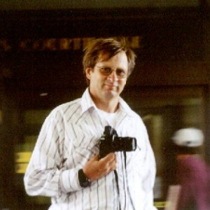
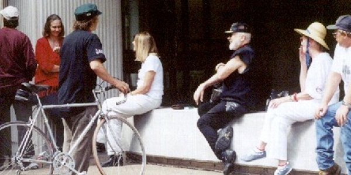
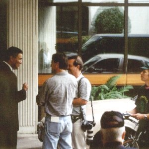
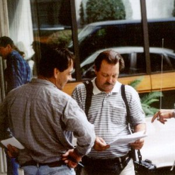

On Tuesday, at 1:30 PM, Barbara Martin and Stan Thompson, both of whom had been served restraining orders regarding the headgates, were to appear in Eugene, OR, before Federal Judge Ann Aiken for a "show cause hearing". Aiken is the same federal judge who found in favor of the environmental biological opinion on April 7th of this year that set the lake level at such high levels in order to "protect" the sucker fish.
Narrative by Jim Palmer
Mary and I left the house at 6:30 AM so that we could get there with enough time to be able to deal with any last min. changes. While in route, we also decided to stop by Lonnie's home to see if he too would be interested in going. When we got there at Lonnie's we found that he very much wanted to go! It took a few min. for him to get his things together and we were again off and running.
We arrived at the Head Gates at 6:50 AM and saw two gray mini vans parked near the dance floor that had been constructed earlier in Aug.. Gaylord Brown was there along with Stan, Mike, Gary Jenkins (supporter) along with some others. Al King arrived just after we did and was wearing a suit that was fitting for the occation. In fact we were all well dressed. No Levi's, nor work clothes.
We took my van and we (Myself, Mary, Lonnie, Mike and Gary) went on our own way. We also learned that Stan was waiting for additional people to arrive that he was to take. So, we load up my van and left at 7:15 AM. Mike needed to make a short stop to pick up additional funds and when we completed that task we went back to the Head Gates to see if there was anyone else that was left behind that would like to go. When we got there, Bill Ransom and Bill Oetting were at the Head Gates talking with the Fish and Wildlife people. Lonnie called down to them asking if they would like to come with us at which time both declined, so we finally left for Eugene at 7:31 AM.. Stan and his two groups had already left.
The morning was great and the weather, well, you couldn't ask for better. Lonnie and I had discussed some of the material I brought along regarding the Federal Rules of Civil Procedure along with the Federal Criminal Code and Rules so that we would all have to some degree of understanding when the time came for us to be in court. Most of the dicussion centered around juridictional issues as well as possible pleadings if Stan and Barbra were to open that door for the court to take juridiction or at lease supplimental jurisdiction under Title 28.
We arrived in Eugene around 11:55 PM, parked the van and walked to the Federal Court House only to dicover that the time for appearence was at 1:30 PM. We looked around for their party/group and only found Gaylord standing near a plazza coffie shop. We offered him a spot to join us for coffee but he respectfully declined. We told him that we would catch up with him later at the court house.
We all ordered coffee with exception to Mike, he wanted something else that was sweet. During that time we discussed the importance that the court not treat both cases as one, but to deal with both issues separately concerning Stan and Barbra. I knew from past experiance that would be something the Government would try to do in consolidating the cases. The other important issue was does the Court have lawfull juridiction, or attempt to argue that they have suplimental juridiction, which I believed they do not! We all had some sort of surprise later in the courtroom.
We finnished the coffee and headed for the court. When we got there, there was a good sized number of US Marshals there to greet us. They appeared nervious at first, but lightened up after they saw that we were just really friendly folk that were there for business. Other than that, it was just routine in running items through the X-Ray machine and the metal detectors...ie..wonds/paddles.. By then everyone was arriving. Bill Ransom was there too. It was apparent that he flew or came over on his own. Barbra and her husband was there along with her sister, along with some faces that we did not recognise. Never the less, we were all there.


Stan and Barbara outside the Courthouse. Rocky from the headgates.

Some of the estimated 40 supporters from Klamath
We all had gone to the courtroom on the second floor and found a fair amount of people there along with two other familiar faces. One was the Fish and Wildlife Officer that was at the Head Gates. The other was one of the BLM officers that was there too. US. Attorney Sutherland was there as with one court clerk and a stenographer.
At 1:38 PM, Judge Ann Aikins entered the courtroom, all being asked to rise, at which time the court was brought to order. Barbra was first addressed by the clerk, and then Stan. After that the Judge addressed Stan Thompson asking if he was represented by legal counsel. Stan stated no, and that he requested a continuance untill such time he was able to accuire counsel. Judge Aikins asked if that were granted, would he honor the TRO (Temp. Restraining Order) regarding specificly to stay away and off the Head Gateds. Stan indicated that through prior dicussion with the US Attorney, he would honor that TRO. At that time the Judge granted the continuance at 30 days.
Then it was Barbra's turn, and it was much the same with exception in that she had been in contact with her attorney, but had need of contacting the court and verify that in fact he was to represent her in this matter before the court. The Judge at this time stated that she would do likewise and not stand on the Head Gates. However it was also noted that the section around the Head Gate belonging to PP&L was moot. The only concern was the Head Gates itself! Judge Aikins then granted the same 30 day continuance and that both were to appear October 4th., 2001 at 1:30 PM. A request from Stan was that both issues before the court be tried seperately.


Media interviews Federal Attorney and one of the environmentalists who showed up.
At this point we were all released from the courtroom and proceeded outside where Herald & News reporters were present for a photo op and some interviews. It was after this point we gathered up ourselfs and left.
Apparently the judge, Fed. Judge Aikens, granted both the continuance and separation requests and set Stan's court date as October 10th at 1:30 p.m. in Eugene.
The fight for the farmer's rights, livelihood and liberty goes on in Klamath. The hearings represent part of the court action associated with that fight. There are other court fights, there are legislative and congressional fights, there is the fight for public opinion. The most important, and most direct action must continue at the headgates. It is where the most influence over the others has occurred ... and will continue to occur..
All I can urge is to put more bypass pipes in. Make them bigger. Fill the ditch wth water. LET THE WATER FLOW!